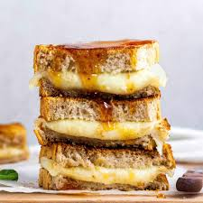

provolone
Home

Provolone Sandwich
Simple, savory, and satisfying, this Provolone Sandwich lets the creamy,
mild sharpness of high-quality provolone cheese take center stage.
Layered onto crusty bread with optional classic Italian fixings,
it's the perfect quick lunch that proves sometimes the best things in life are simple.
Ingredients
- 2 slices of crusty Italian bread or a ciabatta roll
- 3-4 slices of Provolone cheese (try mixing mild and sharp)
- 1 tablespoon olive oil or mayonnaise (for spreading)
- Optional: A handful of fresh arugula or spinach
- Optional: 2-3 slices of tomato
- Optional: A sprinkle of dried oregano or black pepper
Steps
- Prep: If using, wash and pat dry the greens and slice the tomato.
- Assemble: Drizzle the inside of the bread with olive oil (or spread with mayo). Layer the provolone cheese evenly on the bottom slice.
- Finish: Close the sandwich with the top slice of bread.
- Serve: Slice in half and serve immediately, or lightly press on a panini press for a warm, melted version.